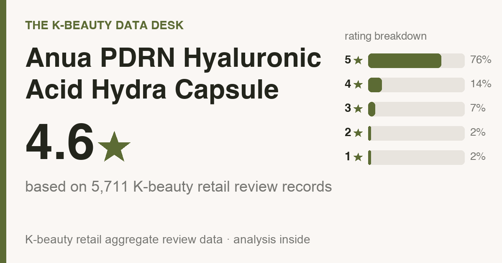

Updated July 2026. I pulled all 5,711 Olive Young reviews and read 500 of them line by line, so this is the crowd talking, not me guessing. Every one is a real buyer. I didn't write, buy, or translate a single review.
Full disclosure up top: the store links at the bottom are affiliate links, so I might earn a small commission if you buy through one. Costs you nothing extra, and it has zero pull on what the numbers say.

The 10-second version: 4.6★ across 5,711 Olive Young reviews (76% of them five stars), and buyers rate it highest for hydration (69%), soothing redness (27%). It's a dry and combination skin favorite (full who-should-skip rundown below).
Price in the US: $25 for 100ml, so about $0.25 a ml. That number drifts, so check the buy links for today's, but the value math holds either way. If you only look at one number: only 12% of reviewers said they bought it again. Most liked it once and felt no tug to restock. That's a try-it-if-you're-curious buy, not a bathroom-shelf staple. If budget is the deciding vote, a plain hydrating mist covers the same job for less.
Fair question, and let's start with finding the thing: in Korea it's the PDRN Hyaluronic Acid Hydra Capsule Mist; in the US the same line sells as “PDRN Collagen Glow Facial Serum Spray.” Now the part I want to be straight about. Different name, and I couldn't independently confirm the US bottle's full ingredient list is identical to the Korean one. Anua seems to run it as one global formula and I found no trace of a separate US version, but “no announced change” isn't proof they match. So read everything below (the reviews, the ingredient breakdown) as the verified picture of the Korean bottle, which is what these reviewers actually sprayed on their faces. It's very likely the same or near-same product, and here's the 30-second move that closes the gap: on the Amazon or retailer listing, pull the ingredients and check them against my breakdown further down. Line up? These reviews are describing your bottle. Got a personal dealbreaker ingredient? That's exactly where you'll catch it. On the rating, the only number that carries weight is Korea's 4.6★ from 5,711 reviews. The brand's US site shows 4.7★ from about 72, but that's self-reported and way too thin to stack against thousands. It points the same direction, so I'll trust the Korean depth over faking a tidy “US vs Korea” chart out of 70-odd reviews.
Context in one breath. This is a top-seller on Olive Young (think Korea's Sephora), but search it in English and you get almost nothing, maybe a TikTok with no real detail. So I dug into what the reviews actually say and pulled the parts you'd want a friend to tell you before you hand over money.
The average sits at 4.6 stars, and it's not a few loud superfans hauling it up. 76% gave it the full five stars (roughly 3 in 4), and 90% landed at four or five.
Sort by sentiment and 89% come out positive. On a pool this size, that's genuinely strong, and it usually signals steady, repeatable results instead of a one-week viral spike.
Read enough of them and the same notes repeat. People love a fine, even mist, instant hydration, and a healthy glow.
Where it actually earns its keep, by the numbers:
Star ratings are the headline. Whether you should actually buy is buried in the fine print, so I read the 500 most-helpful reviews and tallied what people kept raising. Quick math note: the deeper numbers here come from those 500, while the star ratings and skin-type splits above are from the full review base. What stood out:
Across the 5-star reviews, the repeat notes are hydration and dewiness, fast absorption / fresh finish, and use over makeup.
If your skin tends to throw tantrums, this section outweighs any star rating. Of everyone who mentioned it, 73% said it felt gentle with zero sting, and only 2% reported any irritation at all. That's about as reassuring as this kind of data gets. Still, your skin is your skin, so patch-test on your jaw for a couple of days before you go all in.
The reviewer pool skews dry (46%), combination (46%), oily (8%), so that's whose skin these reviews describe best (it leans dry and combination skin). If that's you, you're reading the most relevant crowd. If it isn't, it doesn't mean the mist flops on you, just that fewer reviewers share your skin type, so weight what you read accordingly.
Genuinely worth it for you if:
Who I'd steer off (or at least send in eyes-open):
Nothing works for everyone. If you're really shopping for one of these jobs, here's the category I'd send your money to, with rough US prices so the budget's no surprise:
Those names are well-known starting points to research, not ranked picks. Go vet them yourself and match on what reviewers say each does best, then on price.
The actives are mostly the marketing. The moisturizing is the product. The label wants you chasing the buzzy stuff, so here's the honest split. The PDRN is genuinely in there, not a fairy-dusted token. But Hydrolyzed collagen, ceramides, and Copper peptide are riding right at the bottom of the list, which is there-for-the-label, not for-your-face. (An ingredient list runs in amount order, never exact percentages, so I won't invent a number.) What's doing the real hydrating is the unglamorous part: workhorses like hyaluronic acid and panthenol. A solid hydrator, with the trendy actives just along for the ride. Texture-wise: silicone-based (that's the slip and the dewy finish), no drying alcohol. One real safety stop: the PDRN is salmon-derived, so a fish or shellfish allergy means skip it. That's an allergen, not a preference. Two heads-ups, the kind that are either your whole problem or nothing at all. There's no added fragrance (a genuine plus), but it does carry calming plant extracts (soybean, neem leaf, and ivy-gourd extract), which can still set off reactive or eczema-prone skin, so patch-test if that's you. And if you get fungal acne, walk away: the probiotic ferment, light MCT oil, and soybean in here are exactly what malassezia feeds on. The rest is supporting cast: thickeners, a preservative system, pH balancers. I read every line, and there's nothing scary and nothing thrilling hiding down there. Want the exact label positions? They're in the drop-down.
Position 1 = first on the label (the most), 75 = last (the least). INCI only gives you the order, never exact percentages, so I won't fake a number. Order is the honest tell for amount.
Headline actives, by position:
Silicones:
Fungal-acne (malassezia) feeders:
Botanical extracts (reactive-skin watch):
These positions are from anua.com (official) (the brand's published global INCI). Your US bottle may differ, which is the 30-second Amazon check from earlier.
About PDRN itself, said plainly (as of July 2026): the impressive PDRN research is about injected or in-clinic use. For PDRN sitting in a cosmetic and applied to intact skin, published evidence is thin, and some dermatologists say exactly that out loud. The practical read: reviewers here are scoring the hydration and comfort, and the formula's workhorse humectants deliver that with or without the buzzy acronym. Buy it as a very good hydrator, not as a procedure in a bottle.
Routine order trips people up, so here's the no-drama version for a mist:
One safety note: you're spraying a fine mist near your face, so if you have asthma or reactive airways, spritz onto clean hands and press it in, or mist from a good arm's length.
Strong match. 46% of reviewers had dry skin, the single biggest group, so if that's you the odds tilt your way.
Mostly yes. 73% of reviewers said it felt gentle with no sting. Still patch-test if you react easily, but the irritation rate is genuinely low.
Reviewers describe it as fast-absorbing and fresh, not greasy, so the glow reads more like dewy hydration than a heavy sheen. One honest gap: this is a Korean review base, so it can't tell you how that finish lands on deeper skin tones specifically, and I won't invent a verdict the reviews don't contain. The move instead: spritz a little on one cheek, then check it in daylight AND in a flash selfie before you commit. A silicone-forward, dewy formula can read shiny on any tone under a flash, so the only honest answer is to watch how it behaves on your skin.
Honestly, probably not. Normal skin will like it but won't need it, and if the mist you own already works for you, this won't change your life. It's a genuinely nice pick if you're starting fresh or replacing something you don't love, but “I already have one that works” is a perfectly good reason to skip.
The real tell is whether people come back, not the buzz. 12% said they repurchased and 33% reviewed after a month or more, and reviewers most often rate it best for hydration (69%). The repeat-buyers back that up.
It's one of the better-reviewed picks in its category, and the repeat-buying says people feel it earns its spot. Worth it if its top reviewer-voted strengths line up with what your skin actually needs, and you're not buying it for the hyped actives (those sit low in the formula).
I went through the brand's ingredient list, and it shows no added fragrance on the label, which is a plus for fragrance-sensitive skin (still patch-test to be safe).
I'm not going to name a dupe I haven't read the reviews for. Line it up against other top sellers in the category and match on the job you need done first, price second.
Amazon is the easiest (it auto-routes to your local store), and Olive Young runs its own US store (us.oliveyoung.com) now too. YesStyle and Stylevana are solid value alternates. Outside the US, Olive Young Global ships to the UK, Canada, Australia, Singapore and more. Links are below.
For dry and combination skin that wants hydration and soothing redness, this is an easy yes. For what it's actually trying to do, people are clearly happy with it. If that's the lane you're shopping in, and you don't already own a mist you love, it's a confident yes from me.
And it's not just first-impression love. 33% of the reviews I read came after a month or more of use, so people don't cool on it after the first week.
Not your match? Here are other reviews I built the same way, all the numbers and who-should-skip included:
Disclosure: This article contains affiliate links. If you buy through them, I may earn a small commission at no extra cost to you.
If you're in the US:
Outside the US (UK, Canada, Australia, Singapore, NZ and more):
On prices: the only number I can vouch for is the dated Korea shelf price above (pulled 2026-06-30). Stores reprice constantly and bundles muddy comparisons, so always compare the per-item price at the link before you buy.
← All K-Beauty Data Desk reviews · Best-seller rankings · About & methodology
Published by The K-Beauty Data Desk · Data refreshed 2026-07-05. The reviews are 100% real Olive Young buyers. I read the reviews and made sense of them for you; I never wrote, bought, paid for, or translated any individual review, and I did NOT test the product on my own skin. I received no free product and am not paid or approved by the brand. Check the source ratings yourself.
Data basis: aggregate statistics from Olive Young Korea, retrieved 2026-07-05. The ratings, review count, star distribution and satisfaction polls are all facts pulled in aggregate. The wording, decoding and recommendations are mine. I never copy or translate individual user reviews.